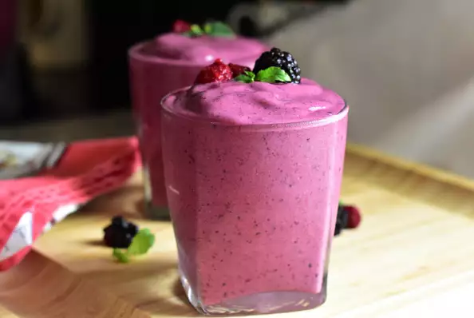

Raspberry Blackberry Smoothie

Description
This Raspberry Blackberry Smoothie is a golden combination! Healthy smoothies with bright flavors and colors are the best!
Ingredients
- 10 fresh blackberries
- 1 cup frozen raspberries (you can use fresh as well)
- 1 cup skim or 1% milk
- 1 Tbsp honey
Steps
- Measure out all of your healthy ingredients. Take out a blender and
add your blackberries, raspberries, milk, and honey.
- Blend on high until the texture is smooth. Serve immediately and enjoy!